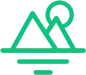
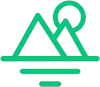
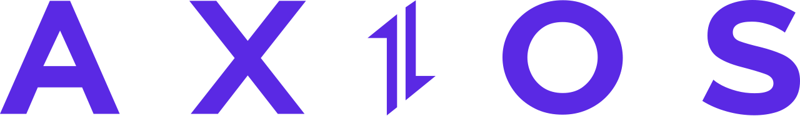
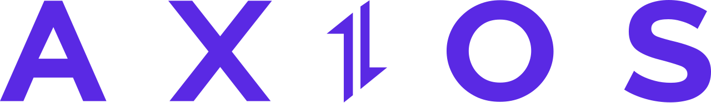

Projeto realizado através NLW Ignite da Rocketseat, desenvolvendo uma aplicação para controlar hábitos diários, alimentando uma tabela nos mesmos moldes que o histórico de contribuições do Github. A aplicação foi desenvolvida de ponta a ponta, com Frontend e Backend. O deploy do projeto foi realizado através da Vercel. Você pode encontrar o código no GitHub aqui Frontend e Backend.

 

Projeto realizado através do curso Ignite da Rocketseat, no qual sua sua função é ser um Dashboard de controle financeiro, agregando as contas a pagar e a receber de um determinado indivíduo. Foi utilizada a tecnologia MirageJS para servir como uma fake API, que deve ser substituída por uma API ou base de dados real caso o projeto seja publicado em um ambiente de produção. O deploy do projeto foi realizado através da Vercel. Você pode encontrar o código no GitHub aqui.
 

Neste projeto, inspirado no aplicativo de Previsão do Tempo do Windows, quis trazer uma página Web que se comportasse dinamicamente conforme o tipo de clima da localidade selecionada pelo usuário. Dessa forma, desenvolvi este projeto com ReactJS e Typescript, consumindo uma API gratuita de dados sobre previsão do tempo fornecida pelo OpenWeather utilizando o cliente HTTP Axios. O deploy do projeto foi realizado através da Vercel. Você pode encontrar o código no GitHub aqui.

Este foi meu primeiro projeto utilizando a biblioteca JavaScript React, e nele fiz uma cópia visual do site Netflix, fazendo consultas na API gratuita do site Themoviedb.org para retornar, de forma dinâmica, os principais títulos do catálogo da Netflix, filmes em destaque, recomendações e por gênero. Este projeto realizei através do curso do Bonieky Lacerda. O deploy do projeto foi realizado através da Vercel. Você pode encontrar o código no GitHub aqui.

Pequeno projeto para aprender, testar e colocar em prática algumas estilizações com CSS puro. Você pode encontrar o código no GitHub aqui.

Projeto realizado como um teste de emprego, no prazo de um dia, com algumas instruções e necessidades de conteúdo, devendo ser minimamente responsivo. O intuito do website é apresentar uma empresa, bem com seu ambiente de trabalho, notícias, e contatos, e este foi o resultado final. Assim como todos meus outros projetos, decidi desenvolvê-lo sem a utilização de Bootstrap, como método de aprendizado. Você pode encontrar o código no GitHub aqui.

Este projeto, em especial, foi desenvolvido como um trabalho de faculdade, a fim de trazer algumas interações com o usuário. Nele, é possível selecionar um arquivo .mp3 (música) de seu computador, e a partir das frequências a batidas da música, irá se formar um visualizador de áudio no rodapé do site. Seu desenvolvimento foi feito especificamente para o computador, sem nenhuma responsividade em dispositivos móveis. Você pode encontrar o código no GitHub aqui.


Recentemente desenvolvi este projeto pessoal, no qual utilizei uma biblioteca Node chamada Puppeteer, que permite gerar um robô para buscar informações em sites da internet. Neste projeto, utilizei para buscar, a cada 1 hora, valores de alguns produtos da loja Kabum!, e armazená-los com data e hora em um banco de dados JSON. A partir destas informações, busco os 5 últimos valores de cada produto, e informo o menor valor armazenado na base de dados. Você pode encontrar o código no GitHub aqui.
Olá, meu nome é Adonai, tenho 23 anos, formado em Ciência da Computação pela
Universidade
Estácio de Sá. O foco das minhas habilidades em programação é no front-end, onde
sempre busco
melhorar meu conhecimento, bem como aprender novas tecnologias.
Hi, my name is Adonai, I'm 23 years old, graduated in Computer Science at Estácio de
Sá
University. My main skills are front-end development, and I am always looking for
improving my
knowledge, as well as learning new technologies.
Assim que ingressei na faculdade em 2017, comecei a estagiar como suporte/implantação de software, onde fui efetivado e atuei durante 5 anos. Desta forma, construí um amplo conhecimento em processos no lado do cliente. Também neste tempo, iniciei meus estudos nas tecnologias front-end, desenvolvendo projetos pessoais para adquirir experiência. Além disso, possuo conhecimento em back-end na linguagem Genexus. Atualmente trabalho com tecnologias Front-end e C#.
Principais:
Planejamento estratégico, Comunicação, Tecnologias
Web.
Ferramentas e tecnologias:
ReactJS, NodeJS, JavaScript, HTML5,
CSS3.
Competências interpessoais:
Liderança de time, Serviço ao
cliente.
Idiomas:
Português fluente, Inglês avançado.
In 2017, at the same time that I joined college, I started an internship as a customer support/software implementation which I was hired and worked for 5 years. Therefore, I built up a broad knowledge in the customer side processes. At the same time, I started my studies in front-end technologies, developing personal projects to get new experience. In addition, I have got some back-end knowledge in Genexus language. Nowadays, I work with Front-end technologies and C#.
Main:
Strategic Planning, Communication, Web Technologies.
Tools and technologies:
ReactJS, NodeJS, JavaScript, HTML5,
CSS3.
Interpersonal skills:
Team Leadership, Customer service.
Languages:
Fluent Portuguese, advanced English.
© Todos os direitos reservados - Desenvolvido por Adonai Figueiredo